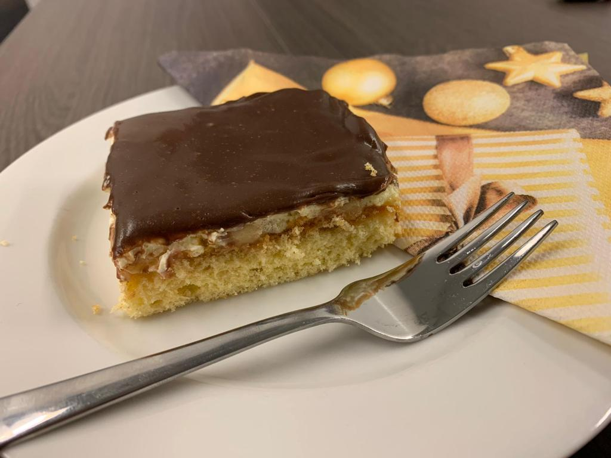

Aus Eiern,Zucker und Mehl ein biskuit bereiten und ca. 15 min. backen. Erkalten lassen und mit Marmelade bestreichen. Die blättrig geschnittenen Bananen darauf legen.
Pudding zubereiten. Margarine und Zucker flaumig rühren und den kalten Pudding dazugeben. Die fertige Creme auf das mit Bananen belegte Biskuit streichen. Zum Schluss Schokolade und Margarine schmelzen und über die Creme gießen.